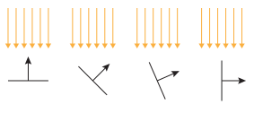
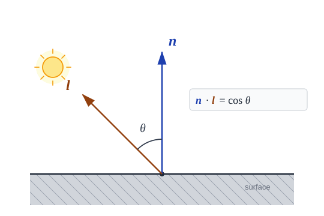

Page 9: Diffuse Shading
The shading overview covered what shading is and set up the three-component model. Here we dig into the first and most fundamental component: diffuse (or Lambertian) shading — the model for matte, non-shiny surfaces. Understanding diffuse shading gives you the core intuition that everything else builds on.
If you didn’t watch it when I mentioned it on the previous page, the Graphics in 5 Minutes video about diffuse reflection is very good, although he discusses specular reflections first.
The Key Property: Eye Position Doesn’t Matter
Think about a piece of chalk, a painted wall, or a piece of unfinished wood. When you shine a light on it, the surface looks brighter facing the light and darker facing away. But here’s the thing: if you move — step left, step right, crouch down — the brightness you see doesn’t change. This is the defining property of a diffuse surface: it scatters incoming light equally in all directions.
Contrast this with a mirror, where the bright spot jumps around completely as you move. We’ll see that case when we get to specular shading.
With diffuse shading, the brightness depends only on the surface orientation and the light direction. The camera position does not matter.
Lambert’s Cosine Law
The intuition for diffuse shading is that when the surface points towards the light source, it catches more light (which it then reflects in all directions equally). Here, the math works for a differentially small patch, but this diagram (with a finite area) makes the point:
{kind=link}

The amount of surface area that is exposed to the light reduces as the surface tilts away from the light source.
When the normal vector is parallel to the light direction, the surface receives the most light. If it is perpendicular to the light direction, it receives no light. In between, it receives some light.
Therefore, the brightness of a diffuse surface point depends on the angle between two vectors. We define the vectors as being from the point.
- n — the outward surface normal
- l — the direction toward the light source
{kind=link}

The surface normal n and the direction to the light l form angle θ. Diffuse brightness is proportional to cos θ.
When the light hits the surface directly (θ = 0°, n and l aligned), the surface is at maximum brightness. As the angle increases, brightness falls off. At θ = 90° (light grazing the surface), the contribution reaches zero. For surfaces facing away from the light (θ > 90°), we clamp to zero — a surface pointing away from a light source receives no direct illumination from it.
The relationship is the cosine of the angle. Since n and l are unit vectors, this is simply their dot product:
The full diffuse shading formula is:
where is the diffuse material color — the color you’d see under perfectly even white light. (It can be an RGB triple, in which case each channel is multiplied separately.)
One consequence worth pausing on: points facing away from the light are completely black. Any surface point with θ > 90° receives no direct diffuse contribution — the max(0, …) clamps it to zero. Real environments have indirect light bouncing around, and we approximate this with an ambient term.
Diffuse Shading in THREE.js
THREE provides a material that implements pure diffuse shading:
MeshLambertMaterial implements Lambertian diffuse shading directly. It
is efficient, but computes shading per-vertex and interpolates the result across
the triangle (Gouraud shading).
The diffuse model is part of the Phong model. So it is possible to get diffuse shading by using the Phong model (implemented in the MeshPhongMaterial) and turning off the other components. This uses Phong shading to get per-pixel lighting calculations.
Summary: Diffuse Shading
Diffuse shading models matte surfaces with the formula : the material color scaled by the cosine of the angle between the surface normal and the light direction. The critical insight: eye position is irrelevant. Only the light direction and the surface normal determine diffuse brightness — that is what distinguishes diffuse from specular reflection, which we look at next.
Next: Page 10 - Specular Shading